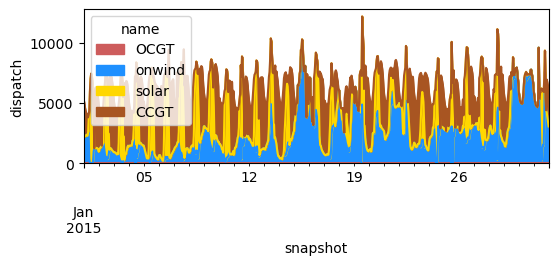
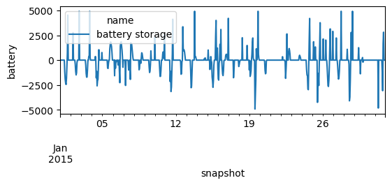

Problem 9.2#
Integrated Energy Grids
Problem 9.2. Joint capacity and dispatch optimization with storage and CO2 emissions limits.
Build the model of Portugal described in Problem 3.1 in PyPSA and assume that methane gas emits 0.198 tCO2 per MWh of thermal energy contained in the gas. Limit the maximum CO\(_2\) emissions to 5 MtCO2/year.
a) Calculate the optimal installed capacities and plot the hourly generation and demand during January.
b) What is the CO2 tax required to attain such CO2 emissions limit?
Note
If you have not yet set up Python on your computer, you can execute this tutorial in your browser via Google Colab. Click on the rocket in the top right corner and launch “Colab”. If that doesn’t work download the .ipynb file and import it in Google Colab.
Then install pandas and numpy by executing the following command in a Jupyter cell at the top of the notebook.
!pip install pandas pypsa
Note
See also https://model.energy.
In this exercise, we want to build a replica of model.energy. This tool calculates the cost of meeting a constant electricity demand from a combination of wind power, solar power and storage for different regions of the world. We deviate from model.energy by including electricity demand profiles rather than a constant electricity demand.
import matplotlib.pyplot as plt
import pandas as pd
import pypsa
Set parameter Username
Set parameter LicenseID to value 2767832
Academic license - for non-commercial use only - expires 2027-01-20
Prerequisites: handling technology data and costs#
We maintain a database (PyPSA/technology-data, v0.11.0) which collects assumptions and projections for energy system technologies (such as costs, efficiencies, lifetimes, etc.) for given years, which we can load into a pandas.DataFrame. This requires some pre-processing to load (e.g. converting units, setting defaults, re-arranging dimensions):
year = 2030
url = f"https://raw.githubusercontent.com/PyPSA/technology-data/v0.11.0/outputs/costs_{year}.csv"
costs = pd.read_csv(url, index_col=[0, 1])
costs.loc[costs.unit.str.contains("/kW"), "value"] *= 1e3
costs.unit = costs.unit.str.replace("/kW", "/MW")
defaults = {
"FOM": 0,
"VOM": 0,
"efficiency": 1,
"fuel": 0,
"investment": 0,
"lifetime": 25,
"CO2 intensity": 0,
"discount rate": 0.07,
}
costs = costs.value.unstack().fillna(defaults)
costs.at["OCGT", "fuel"] = costs.at["gas", "fuel"]
costs.at["CCGT", "fuel"] = costs.at["gas", "fuel"]
costs.at["OCGT", "CO2 intensity"] = costs.at["gas", "CO2 intensity"]
costs.at["CCGT", "CO2 intensity"] = costs.at["gas", "CO2 intensity"]
Let’s also write a small utility function that calculates the annuity to annualise investment costs. The formula is
where \(r\) is the discount rate and \(n\) is the lifetime.
def annuity(r, n):
return r / (1.0 - 1.0 / (1.0 + r) ** n)
annuity(0.07, 20)
0.09439292574325567
Based on this, we can calculate the marginal generation costs (€/MWh):
costs["marginal_cost"] = costs["VOM"] + costs["fuel"] / costs["efficiency"]
and the annualised investment costs (capital_cost in PyPSA terms, €/MW/a):
annuity = costs.apply(lambda x: annuity(x["discount rate"], x["lifetime"]), axis=1)
costs["capital_cost"] = (annuity + costs["FOM"] / 100) * costs["investment"]
Now we can for example read the capital and marginal cost of onshore wind and solar, or the emissions factors of the carrier gas used in and OCGT
costs.at["onwind", "capital_cost"] #EUR/MW/a
np.float64(101644.12332388277)
costs.at["solar", "capital_cost"] #EUR/MW/a
np.float64(51346.82981964593)
costs.at["OCGT", "capital_cost"] #EUR/MW/a
np.float64(47718.67056370105)
costs.at["CCGT", "capital_cost"] #EUR/MW/a
np.float64(104788.02078332388)
costs.at["CCGT", "CO2 intensity"] #tCO2/MWh_th
np.float64(0.198)
costs.at["CCGT", "marginal_cost"]
np.float64(46.803120689655174)
costs.at["OCGT", "marginal_cost"]
np.float64(64.6839512195122)
Retrieving time series data#
In this example, wind data from https://zenodo.org/record/3253876#.XSiVOEdS8l0 and solar PV data from https://zenodo.org/record/2613651#.X0kbhDVS-uV is used. The data is downloaded in csv format and saved in the ‘data’ folder. The Pandas package is used as a convenient way of managing the datasets.
For convenience, the column including date information is converted into Datetime and set as index
data_solar = pd.read_csv('data/pv_optimal.csv',sep=';')
data_solar.index = pd.DatetimeIndex(data_solar['utc_time'])
data_wind = pd.read_csv('data/onshore_wind_1979-2017.csv',sep=';')
data_wind.index = pd.DatetimeIndex(data_wind['utc_time'])
data_el = pd.read_csv('data/electricity_demand.csv',sep=';')
data_el.index = pd.DatetimeIndex(data_el['utc_time'])
The data format can now be analyzed using the .head() function to show the first lines of the data set
data_solar.head()
| utc_time | AUT | BEL | BGR | BIH | CHE | CYP | CZE | DEU | DNK | ... | MLT | NLD | NOR | POL | PRT | ROU | SRB | SVK | SVN | SWE | |
|---|---|---|---|---|---|---|---|---|---|---|---|---|---|---|---|---|---|---|---|---|---|
| utc_time | |||||||||||||||||||||
| 1979-01-01 00:00:00+00:00 | 1979-01-01T00:00:00Z | 0.0 | 0.0 | 0.0 | 0.0 | 0.0 | 0.0 | 0.0 | 0.0 | 0.0 | ... | 0.0 | 0.0 | 0.0 | 0.0 | 0.0 | 0.0 | 0.0 | 0.0 | 0.0 | 0.0 |
| 1979-01-01 01:00:00+00:00 | 1979-01-01T01:00:00Z | 0.0 | 0.0 | 0.0 | 0.0 | 0.0 | 0.0 | 0.0 | 0.0 | 0.0 | ... | 0.0 | 0.0 | 0.0 | 0.0 | 0.0 | 0.0 | 0.0 | 0.0 | 0.0 | 0.0 |
| 1979-01-01 02:00:00+00:00 | 1979-01-01T02:00:00Z | 0.0 | 0.0 | 0.0 | 0.0 | 0.0 | 0.0 | 0.0 | 0.0 | 0.0 | ... | 0.0 | 0.0 | 0.0 | 0.0 | 0.0 | 0.0 | 0.0 | 0.0 | 0.0 | 0.0 |
| 1979-01-01 03:00:00+00:00 | 1979-01-01T03:00:00Z | 0.0 | 0.0 | 0.0 | 0.0 | 0.0 | 0.0 | 0.0 | 0.0 | 0.0 | ... | 0.0 | 0.0 | 0.0 | 0.0 | 0.0 | 0.0 | 0.0 | 0.0 | 0.0 | 0.0 |
| 1979-01-01 04:00:00+00:00 | 1979-01-01T04:00:00Z | 0.0 | 0.0 | 0.0 | 0.0 | 0.0 | 0.0 | 0.0 | 0.0 | 0.0 | ... | 0.0 | 0.0 | 0.0 | 0.0 | 0.0 | 0.0 | 0.0 | 0.0 | 0.0 | 0.0 |
5 rows × 33 columns
We will use timeseries for Portugal in this excercise
country = 'PRT'
Join capacity and dispatch optimization#
For building the model, we start again by initialising an empty network, adding the snapshots, and the electricity bus.
n = pypsa.Network()
hours_in_2015 = pd.date_range('2015-01-01 00:00Z',
'2015-12-31 23:00Z',
freq='h')
n.set_snapshots(hours_in_2015.values)
n.add("Bus",
"electricity")
n.snapshots
DatetimeIndex(['2015-01-01 00:00:00', '2015-01-01 01:00:00',
'2015-01-01 02:00:00', '2015-01-01 03:00:00',
'2015-01-01 04:00:00', '2015-01-01 05:00:00',
'2015-01-01 06:00:00', '2015-01-01 07:00:00',
'2015-01-01 08:00:00', '2015-01-01 09:00:00',
...
'2015-12-31 14:00:00', '2015-12-31 15:00:00',
'2015-12-31 16:00:00', '2015-12-31 17:00:00',
'2015-12-31 18:00:00', '2015-12-31 19:00:00',
'2015-12-31 20:00:00', '2015-12-31 21:00:00',
'2015-12-31 22:00:00', '2015-12-31 23:00:00'],
dtype='datetime64[ns]', name='snapshot', length=8760, freq=None)
We add all the technologies we are going to include as carriers.
carriers = [
"onwind",
"solar",
"OCGT",
"CCGT",
"battery storage",
]
n.add(
"Carrier",
carriers,
color=["dodgerblue", "gold", "indianred","#a85522", "brown"],
co2_emissions=[costs.at[c, "CO2 intensity"] for c in carriers],
)
Next, we add the demand time series to the model.
# add load to the bus
n.add("Load",
"demand",
bus="electricity",
p_set=data_el[country].values)
Let’s have a check whether the data was read-in correctly.
n.loads_t.p_set.plot(figsize=(6, 2), ylabel="MW")
<Axes: xlabel='snapshot', ylabel='MW'>

We add now the generators and set up their capacities to be extendable so that they can be optimized together with the dispatch time series. For the wind and solar generator, we need to indicate the capacity factor or maximum power per unit ‘p_max_pu’
n.add(
"Generator",
"OCGT",
bus="electricity",
carrier="OCGT",
capital_cost=costs.at["OCGT", "capital_cost"],
marginal_cost=costs.at["OCGT", "marginal_cost"],
efficiency=costs.at["OCGT", "efficiency"],
p_nom_extendable=True,
)
CF_wind = data_wind[country][[hour.strftime("%Y-%m-%dT%H:%M:%SZ") for hour in n.snapshots]]
n.add(
"Generator",
"onwind",
bus="electricity",
carrier="onwind",
p_max_pu=CF_wind.values,
capital_cost=costs.at["onwind", "capital_cost"],
marginal_cost=costs.at["onwind", "marginal_cost"],
efficiency=costs.at["onwind", "efficiency"],
p_nom_extendable=True,
)
CF_solar = data_solar[country][[hour.strftime("%Y-%m-%dT%H:%M:%SZ") for hour in n.snapshots]]
n.add(
"Generator",
"solar",
bus="electricity",
carrier="solar",
p_max_pu= CF_solar.values,
capital_cost=costs.at["solar", "capital_cost"],
marginal_cost=costs.at["solar", "marginal_cost"],
efficiency=costs.at["solar", "efficiency"],
p_nom_extendable=True,
)
So let’s make sure the capacity factors are read-in correctly.
n.generators_t.p_max_pu.loc["2015-01"].plot(figsize=(6, 2), ylabel="CF")
<Axes: xlabel='snapshot', ylabel='CF'>

We add the battery storage, assuming a fixed energy-to-power ratio of 2 hours, i.e. if fully charged, the battery can discharge at full capacity for 2 hours.
For the capital cost, we have to factor in both the capacity and energy cost of the storage.
We include the charging and discharging efficiencies we enforce a cyclic state-of-charge condition, i.e. the state of charge at the beginning of the optimisation period must equal the final state of charge.
n.add(
"StorageUnit",
"battery storage",
bus="electricity",
carrier="battery storage",
max_hours=2,
capital_cost=costs.at["battery inverter", "capital_cost"]
+ 2 * costs.at["battery storage", "capital_cost"],
efficiency_store=costs.at["battery inverter", "efficiency"],
efficiency_dispatch=costs.at["battery inverter", "efficiency"],
p_nom_extendable=True,
cyclic_state_of_charge=True,
)
We add the Combined Cycle Gas Turbine (CCGT). In this case, its capacity is not extendable but fixed to 1 GW.
n.add(
"Generator",
"CCGT",
bus="electricity",
carrier="CCGT",
capital_cost=costs.at["CCGT", "capital_cost"],
marginal_cost=costs.at["CCGT", "marginal_cost"],
efficiency=costs.at["CCGT", "efficiency"],
p_nom=6000, #6 Gw
)
Model Run#
Before solving the problem we add a CO\(_2\) emission limit as global constraint:
n.add(
"GlobalConstraint",
"CO2Limit",
carrier_attribute="co2_emissions",
sense="<=",
constant=5000000, #5MtCO2
)
We can already solved the model using the open-solver “highs” or the commercial solver “gurobi” with the academic license
n.optimize(solver_name="gurobi")
WARNING:pypsa.consistency:The following buses have carriers which are not defined:
Index(['electricity'], dtype='object', name='name')
INFO:linopy.model: Solve problem using Gurobi solver
INFO:linopy.io:Writing objective.
Writing constraints.: 100%|██████████| 15/15 [00:00<00:00, 70.68it/s]
Writing continuous variables.: 100%|██████████| 6/6 [00:00<00:00, 365.94it/s]
INFO:linopy.io: Writing time: 0.29s
Set parameter Username
INFO:gurobipy:Set parameter Username
Set parameter LicenseID to value 2767832
INFO:gurobipy:Set parameter LicenseID to value 2767832
Academic license - for non-commercial use only - expires 2027-01-20
INFO:gurobipy:Academic license - for non-commercial use only - expires 2027-01-20
Read LP format model from file /private/var/folders/zg/by4_k0616s98pw41wld9475c0000gp/T/linopy-problem-3wfjioln.lp
INFO:gurobipy:Read LP format model from file /private/var/folders/zg/by4_k0616s98pw41wld9475c0000gp/T/linopy-problem-3wfjioln.lp
Reading time = 0.14 seconds
INFO:gurobipy:Reading time = 0.14 seconds
obj: 140165 rows, 61324 columns, 275962 nonzeros
INFO:gurobipy:obj: 140165 rows, 61324 columns, 275962 nonzeros
Gurobi Optimizer version 13.0.0 build v13.0.0rc1 (mac64[arm] - Darwin 25.3.0 25D2128)
INFO:gurobipy:Gurobi Optimizer version 13.0.0 build v13.0.0rc1 (mac64[arm] - Darwin 25.3.0 25D2128)
INFO:gurobipy:
CPU model: Apple M3
INFO:gurobipy:CPU model: Apple M3
Thread count: 8 physical cores, 8 logical processors, using up to 8 threads
INFO:gurobipy:Thread count: 8 physical cores, 8 logical processors, using up to 8 threads
INFO:gurobipy:
Optimize a model with 140165 rows, 61324 columns and 275962 nonzeros (Min)
INFO:gurobipy:Optimize a model with 140165 rows, 61324 columns and 275962 nonzeros (Min)
Model fingerprint: 0xab1a659f
INFO:gurobipy:Model fingerprint: 0xab1a659f
Model has 35044 linear objective coefficients
INFO:gurobipy:Model has 35044 linear objective coefficients
Coefficient statistics:
INFO:gurobipy:Coefficient statistics:
Matrix range [1e-03, 2e+00]
INFO:gurobipy: Matrix range [1e-03, 2e+00]
Objective range [1e-02, 1e+05]
INFO:gurobipy: Objective range [1e-02, 1e+05]
Bounds range [0e+00, 0e+00]
INFO:gurobipy: Bounds range [0e+00, 0e+00]
RHS range [3e+03, 5e+06]
INFO:gurobipy: RHS range [3e+03, 5e+06]
Presolve removed 74446 rows and 4362 columns
INFO:gurobipy:Presolve removed 74446 rows and 4362 columns
Presolve time: 0.06s
INFO:gurobipy:Presolve time: 0.06s
Presolved: 65719 rows, 56962 columns, 197154 nonzeros
INFO:gurobipy:Presolved: 65719 rows, 56962 columns, 197154 nonzeros
INFO:gurobipy:
Concurrent LP optimizer: primal simplex, dual simplex, and barrier
INFO:gurobipy:Concurrent LP optimizer: primal simplex, dual simplex, and barrier
Showing barrier log only...
INFO:gurobipy:Showing barrier log only...
INFO:gurobipy:
Ordering time: 0.01s
INFO:gurobipy:Ordering time: 0.01s
INFO:gurobipy:
Barrier statistics:
INFO:gurobipy:Barrier statistics:
Dense cols : 4
INFO:gurobipy: Dense cols : 4
AA' NZ : 1.577e+05
INFO:gurobipy: AA' NZ : 1.577e+05
Factor NZ : 7.408e+05 (roughly 60 MB of memory)
INFO:gurobipy: Factor NZ : 7.408e+05 (roughly 60 MB of memory)
Factor Ops : 8.664e+06 (less than 1 second per iteration)
INFO:gurobipy: Factor Ops : 8.664e+06 (less than 1 second per iteration)
Threads : 1
INFO:gurobipy: Threads : 1
INFO:gurobipy:
Objective Residual
INFO:gurobipy: Objective Residual
Iter Primal Dual Primal Dual Compl Time
INFO:gurobipy:Iter Primal Dual Primal Dual Compl Time
0 5.26767651e+11 -2.68683502e+11 7.87e+09 1.56e-13 1.37e+09 0s
INFO:gurobipy: 0 5.26767651e+11 -2.68683502e+11 7.87e+09 1.56e-13 1.37e+09 0s
1 5.57687789e+11 -3.45835111e+11 1.26e+09 5.14e+02 2.76e+08 0s
INFO:gurobipy: 1 5.57687789e+11 -3.45835111e+11 1.26e+09 5.14e+02 2.76e+08 0s
2 5.01540495e+11 -2.96262362e+11 1.13e+08 6.98e+01 3.95e+07 0s
INFO:gurobipy: 2 5.01540495e+11 -2.96262362e+11 1.13e+08 6.98e+01 3.95e+07 0s
3 1.77766588e+11 -1.02571523e+11 6.28e-08 3.31e+00 3.69e+06 0s
INFO:gurobipy: 3 1.77766588e+11 -1.02571523e+11 6.28e-08 3.31e+00 3.69e+06 0s
4 5.76707291e+10 -1.40657402e+10 2.24e-07 2.83e-01 7.17e+05 0s
INFO:gurobipy: 4 5.76707291e+10 -1.40657402e+10 2.24e-07 2.83e-01 7.17e+05 0s
5 1.58902629e+10 -8.05701714e+08 1.23e-07 1.60e-13 1.49e+05 0s
INFO:gurobipy: 5 1.58902629e+10 -8.05701714e+08 1.23e-07 1.60e-13 1.49e+05 0s
6 9.18000665e+09 5.94356513e+08 1.04e-07 9.82e-11 7.58e+04 0s
INFO:gurobipy: 6 9.18000665e+09 5.94356513e+08 1.04e-07 9.82e-11 7.58e+04 0s
7 5.54220688e+09 1.11980427e+09 1.79e-07 5.53e-10 3.89e+04 0s
INFO:gurobipy: 7 5.54220688e+09 1.11980427e+09 1.79e-07 5.53e-10 3.89e+04 0s
8 4.30191392e+09 1.51420269e+09 3.46e-07 5.82e-10 2.45e+04 0s
INFO:gurobipy: 8 4.30191392e+09 1.51420269e+09 3.46e-07 5.82e-10 2.45e+04 0s
9 3.75813449e+09 1.75111367e+09 1.23e-07 1.75e-10 1.76e+04 0s
INFO:gurobipy: 9 3.75813449e+09 1.75111367e+09 1.23e-07 1.75e-10 1.76e+04 0s
10 3.51789605e+09 1.95521462e+09 1.15e-07 5.82e-11 1.37e+04 0s
INFO:gurobipy: 10 3.51789605e+09 1.95521462e+09 1.15e-07 5.82e-11 1.37e+04 0s
11 3.14237311e+09 2.29915698e+09 3.73e-09 3.78e-10 7.41e+03 0s
INFO:gurobipy: 11 3.14237311e+09 2.29915698e+09 3.73e-09 3.78e-10 7.41e+03 0s
12 2.97098384e+09 2.53321290e+09 1.83e-07 1.31e-09 3.84e+03 0s
INFO:gurobipy: 12 2.97098384e+09 2.53321290e+09 1.83e-07 1.31e-09 3.84e+03 0s
13 2.93124630e+09 2.60631533e+09 1.68e-07 2.91e-10 2.85e+03 0s
INFO:gurobipy: 13 2.93124630e+09 2.60631533e+09 1.68e-07 2.91e-10 2.85e+03 0s
14 2.89065030e+09 2.62732281e+09 2.46e-07 9.60e-10 2.31e+03 0s
INFO:gurobipy: 14 2.89065030e+09 2.62732281e+09 2.46e-07 9.60e-10 2.31e+03 0s
15 2.88231447e+09 2.65051594e+09 1.30e-07 2.36e-10 2.04e+03 0s
INFO:gurobipy: 15 2.88231447e+09 2.65051594e+09 1.30e-07 2.36e-10 2.04e+03 0s
16 2.85646273e+09 2.68354358e+09 5.40e-07 1.75e-10 1.52e+03 0s
INFO:gurobipy: 16 2.85646273e+09 2.68354358e+09 5.40e-07 1.75e-10 1.52e+03 0s
17 2.82256244e+09 2.70122014e+09 4.32e-07 2.33e-10 1.07e+03 0s
INFO:gurobipy: 17 2.82256244e+09 2.70122014e+09 4.32e-07 2.33e-10 1.07e+03 0s
18 2.81602828e+09 2.70708808e+09 1.30e-07 1.02e-09 9.56e+02 0s
INFO:gurobipy: 18 2.81602828e+09 2.70708808e+09 1.30e-07 1.02e-09 9.56e+02 0s
19 2.80072265e+09 2.71557043e+09 8.87e-07 7.28e-12 7.48e+02 0s
INFO:gurobipy: 19 2.80072265e+09 2.71557043e+09 8.87e-07 7.28e-12 7.48e+02 0s
20 2.78973630e+09 2.72503455e+09 1.41e-06 1.02e-09 5.68e+02 1s
INFO:gurobipy: 20 2.78973630e+09 2.72503455e+09 1.41e-06 1.02e-09 5.68e+02 1s
21 2.78506795e+09 2.72833800e+09 9.16e-07 2.18e-11 4.98e+02 1s
INFO:gurobipy: 21 2.78506795e+09 2.72833800e+09 9.16e-07 2.18e-11 4.98e+02 1s
22 2.77957631e+09 2.73584285e+09 8.05e-07 2.33e-10 3.84e+02 1s
INFO:gurobipy: 22 2.77957631e+09 2.73584285e+09 8.05e-07 2.33e-10 3.84e+02 1s
23 2.77616369e+09 2.74193244e+09 6.85e-07 6.75e-14 3.01e+02 1s
INFO:gurobipy: 23 2.77616369e+09 2.74193244e+09 6.85e-07 6.75e-14 3.01e+02 1s
24 2.77014702e+09 2.74636894e+09 9.09e-07 6.69e-10 2.09e+02 1s
INFO:gurobipy: 24 2.77014702e+09 2.74636894e+09 9.09e-07 6.69e-10 2.09e+02 1s
25 2.76847539e+09 2.75209491e+09 1.66e-06 1.16e-10 1.44e+02 1s
INFO:gurobipy: 25 2.76847539e+09 2.75209491e+09 1.66e-06 1.16e-10 1.44e+02 1s
26 2.76270770e+09 2.75570757e+09 2.93e-06 7.28e-10 6.15e+01 1s
INFO:gurobipy: 26 2.76270770e+09 2.75570757e+09 2.93e-06 7.28e-10 6.15e+01 1s
27 2.76144523e+09 2.75693169e+09 1.12e-06 9.09e-11 3.96e+01 1s
INFO:gurobipy: 27 2.76144523e+09 2.75693169e+09 1.12e-06 9.09e-11 3.96e+01 1s
28 2.76106435e+09 2.75746927e+09 1.61e-06 8.73e-10 3.16e+01 1s
INFO:gurobipy: 28 2.76106435e+09 2.75746927e+09 1.61e-06 8.73e-10 3.16e+01 1s
29 2.76062616e+09 2.75825524e+09 5.96e-07 1.35e-10 2.08e+01 1s
INFO:gurobipy: 29 2.76062616e+09 2.75825524e+09 5.96e-07 1.35e-10 2.08e+01 1s
30 2.76046591e+09 2.75864329e+09 1.27e-06 4.07e-10 1.60e+01 1s
INFO:gurobipy: 30 2.76046591e+09 2.75864329e+09 1.27e-06 4.07e-10 1.60e+01 1s
31 2.76032698e+09 2.75900056e+09 1.88e-06 2.44e-10 1.16e+01 1s
INFO:gurobipy: 31 2.76032698e+09 2.75900056e+09 1.88e-06 2.44e-10 1.16e+01 1s
32 2.76005922e+09 2.75977852e+09 1.49e-07 2.33e-10 2.46e+00 1s
INFO:gurobipy: 32 2.76005922e+09 2.75977852e+09 1.49e-07 2.33e-10 2.46e+00 1s
33 2.76001518e+09 2.75991761e+09 2.60e-06 1.75e-10 8.57e-01 1s
INFO:gurobipy: 33 2.76001518e+09 2.75991761e+09 2.60e-06 1.75e-10 8.57e-01 1s
34 2.76000406e+09 2.75994071e+09 1.25e-06 1.16e-10 5.56e-01 1s
INFO:gurobipy: 34 2.76000406e+09 2.75994071e+09 1.25e-06 1.16e-10 5.56e-01 1s
35 2.75999882e+09 2.75997512e+09 1.34e-07 3.78e-10 2.08e-01 1s
INFO:gurobipy: 35 2.75999882e+09 2.75997512e+09 1.34e-07 3.78e-10 2.08e-01 1s
36 2.75999202e+09 2.75999124e+09 6.93e-07 7.57e-10 6.88e-03 1s
INFO:gurobipy: 36 2.75999202e+09 2.75999124e+09 6.93e-07 7.57e-10 6.88e-03 1s
37 2.75999166e+09 2.75999164e+09 9.31e-08 8.44e-10 1.67e-04 1s
INFO:gurobipy: 37 2.75999166e+09 2.75999164e+09 9.31e-08 8.44e-10 1.67e-04 1s
38 2.75999165e+09 2.75999165e+09 3.95e-07 8.75e-09 2.36e-07 1s
INFO:gurobipy: 38 2.75999165e+09 2.75999165e+09 3.95e-07 8.75e-09 2.36e-07 1s
39 2.75999165e+09 2.75999165e+09 2.64e-07 4.97e-09 5.85e-10 1s
INFO:gurobipy: 39 2.75999165e+09 2.75999165e+09 2.64e-07 4.97e-09 5.85e-10 1s
INFO:gurobipy:
Barrier solved model in 39 iterations and 1.07 seconds (1.30 work units)
INFO:gurobipy:Barrier solved model in 39 iterations and 1.07 seconds (1.30 work units)
Optimal objective 2.75999165e+09
INFO:gurobipy:Optimal objective 2.75999165e+09
INFO:gurobipy:
Crossover log...
INFO:gurobipy:Crossover log...
INFO:gurobipy:
8836 DPushes remaining with DInf 0.0000000e+00 1s
INFO:gurobipy: 8836 DPushes remaining with DInf 0.0000000e+00 1s
0 DPushes remaining with DInf 0.0000000e+00 1s
INFO:gurobipy: 0 DPushes remaining with DInf 0.0000000e+00 1s
Warning: Markowitz tolerance tightened to 0.5
INFO:gurobipy:Warning: Markowitz tolerance tightened to 0.5
INFO:gurobipy:
7784 PPushes remaining with PInf 0.0000000e+00 1s
INFO:gurobipy: 7784 PPushes remaining with PInf 0.0000000e+00 1s
0 PPushes remaining with PInf 0.0000000e+00 3s
INFO:gurobipy: 0 PPushes remaining with PInf 0.0000000e+00 3s
INFO:gurobipy:
Push phase complete: Pinf 0.0000000e+00, Dinf 1.8156943e-09 3s
INFO:gurobipy: Push phase complete: Pinf 0.0000000e+00, Dinf 1.8156943e-09 3s
INFO:gurobipy:
Crossover time: 1.59 seconds (5.76 work units)
INFO:gurobipy:Crossover time: 1.59 seconds (5.76 work units)
INFO:gurobipy:
Solved with barrier
INFO:gurobipy:Solved with barrier
Iteration Objective Primal Inf. Dual Inf. Time
INFO:gurobipy:Iteration Objective Primal Inf. Dual Inf. Time
7863 2.7599916e+09 0.000000e+00 0.000000e+00 3s
INFO:gurobipy: 7863 2.7599916e+09 0.000000e+00 0.000000e+00 3s
INFO:gurobipy:
Solved in 7863 iterations and 2.74 seconds (7.35 work units)
INFO:gurobipy:Solved in 7863 iterations and 2.74 seconds (7.35 work units)
Optimal objective 2.759991647e+09
INFO:gurobipy:Optimal objective 2.759991647e+09
INFO:linopy.constants: Optimization successful:
Status: ok
Termination condition: optimal
Solution: 61324 primals, 140165 duals
Objective: 2.76e+09
Solver model: available
Solver message: 2
INFO:pypsa.optimization.optimize:The shadow-prices of the constraints Generator-fix-p-lower, Generator-fix-p-upper, Generator-ext-p-lower, Generator-ext-p-upper, StorageUnit-ext-p_dispatch-lower, StorageUnit-ext-p_dispatch-upper, StorageUnit-ext-p_store-lower, StorageUnit-ext-p_store-upper, StorageUnit-ext-state_of_charge-lower, StorageUnit-ext-state_of_charge-upper, StorageUnit-energy_balance were not assigned to the network.
('ok', 'optimal')
Now, we can look at the results and evaluate the total system cost (in billion Euros per year)
n.objective / 1e9
2.7599916471150063
The optimised capacities in GW:
n.generators.p_nom_opt.div(1e3) # MW -> GW
name
OCGT 0.000000
onwind 12.476224
solar 10.342911
CCGT 6.000000
Name: p_nom_opt, dtype: float64
n.storage_units.p_nom_opt.div(1e3) # MW -> GW
name
battery storage 4.915387
Name: p_nom_opt, dtype: float64
The total energy generation by technology in TWh:
n.generators_t.p.sum().div(1e6) # MWh -> TWh
name
OCGT 0.000000
onwind 18.934473
solar 15.583091
CCGT 14.646465
dtype: float64
We can plot the dispatch of every generator thoughout January
n.generators_t.p.loc["2015-01"].plot.area(figsize=(6, 2), ylabel="dispatch", color=n.generators_t.p.columns.map(n.carriers.color))
<Axes: xlabel='snapshot', ylabel='dispatch'>

We can also plot the charging and discharging of the battery
n.storage_units_t.p.loc["2015-01"].plot(figsize=(6, 2), ylabel="battery")
<Axes: xlabel='snapshot', ylabel='battery'>

b) What is the CO2 tax required to attain such CO2 emissions limit?
We can read the Lagrange/KKT multiplier associated to the maximum CO2 limit constraint
n.global_constraints
| type | investment_period | bus | carrier_attribute | sense | constant | mu | |
|---|---|---|---|---|---|---|---|
| name | |||||||
| CO2Limit | primary_energy | NaN | co2_emissions | <= | 5000000.0 | -189.568204 |
In this case, we get a negative multiplier indicating that when the constant in the constraint equation (allowed CO2 emisssions) increases, the objective function (total system costs) decreases.